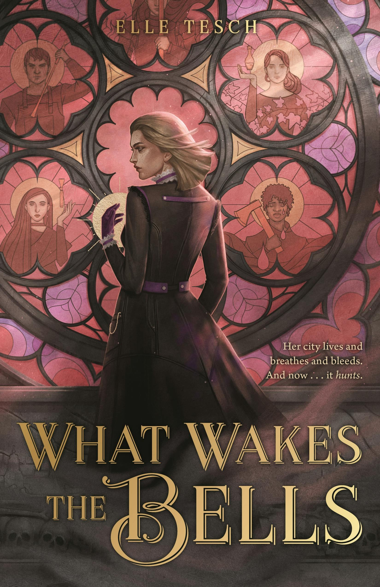
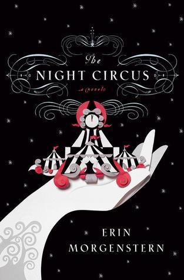
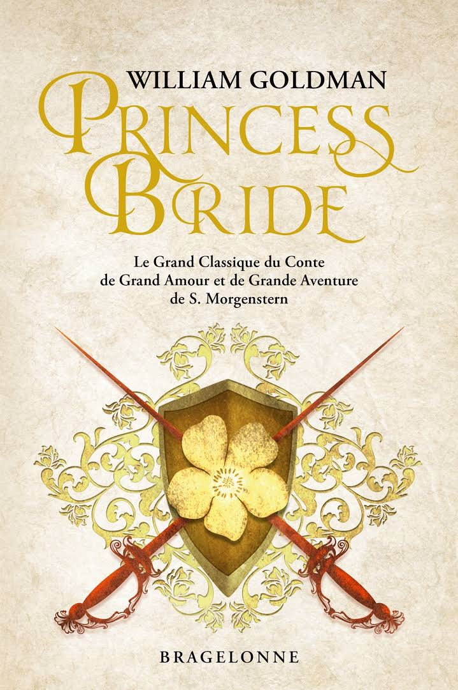
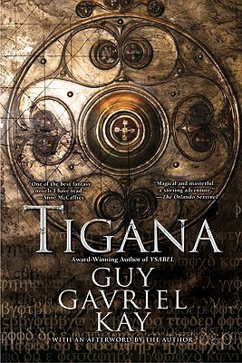
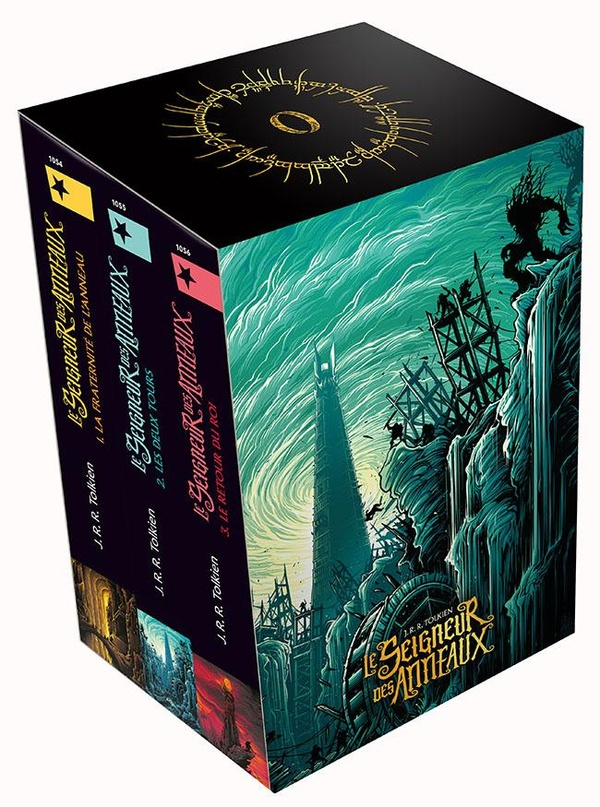
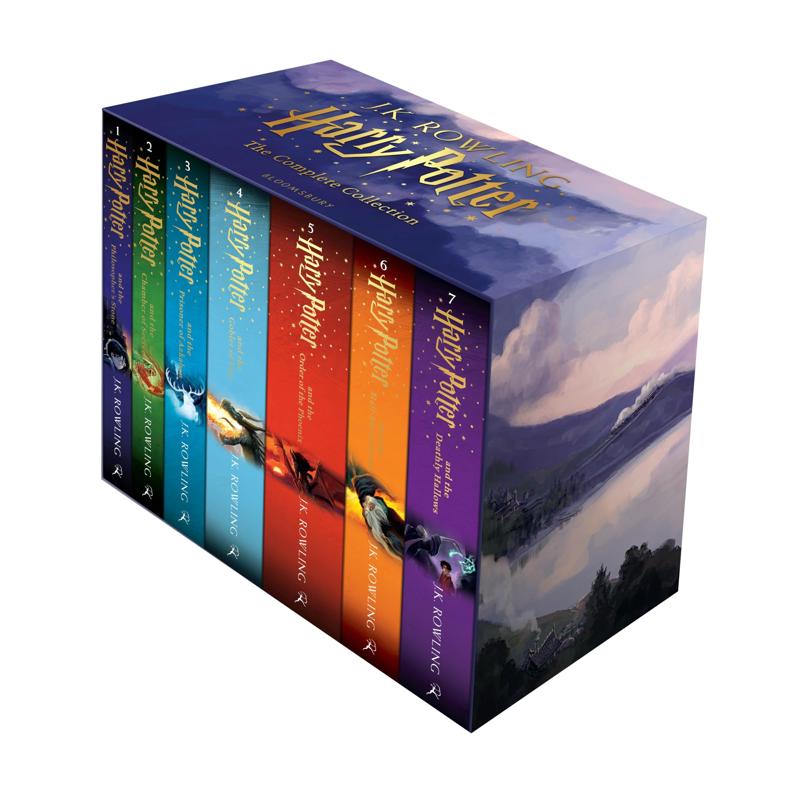
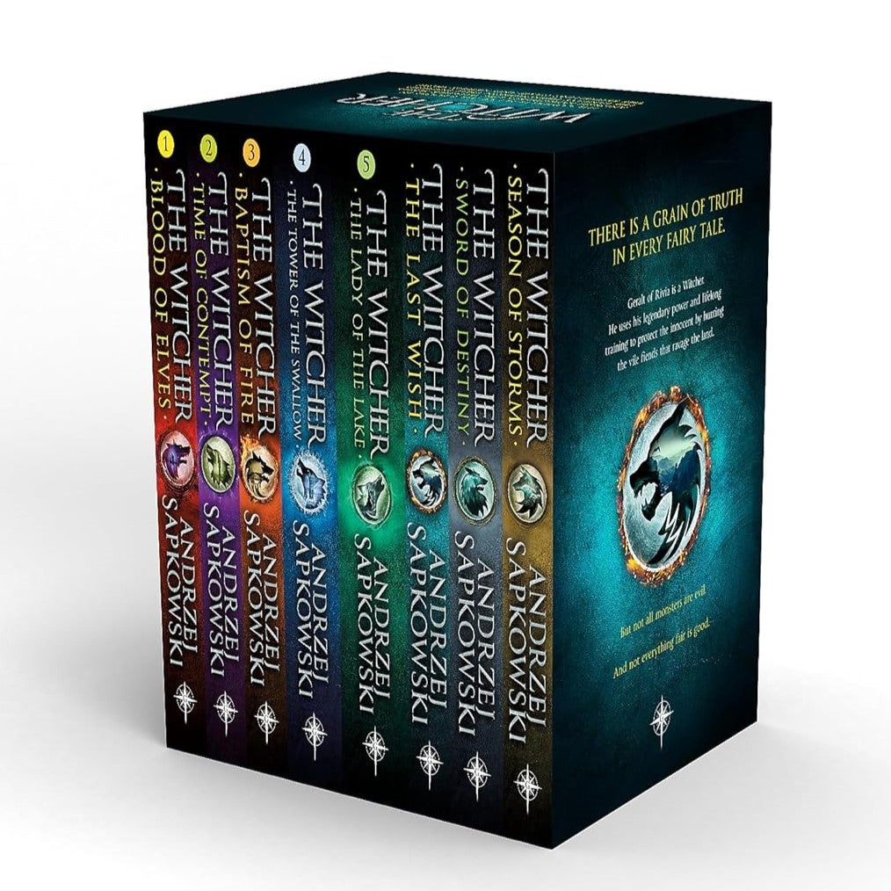
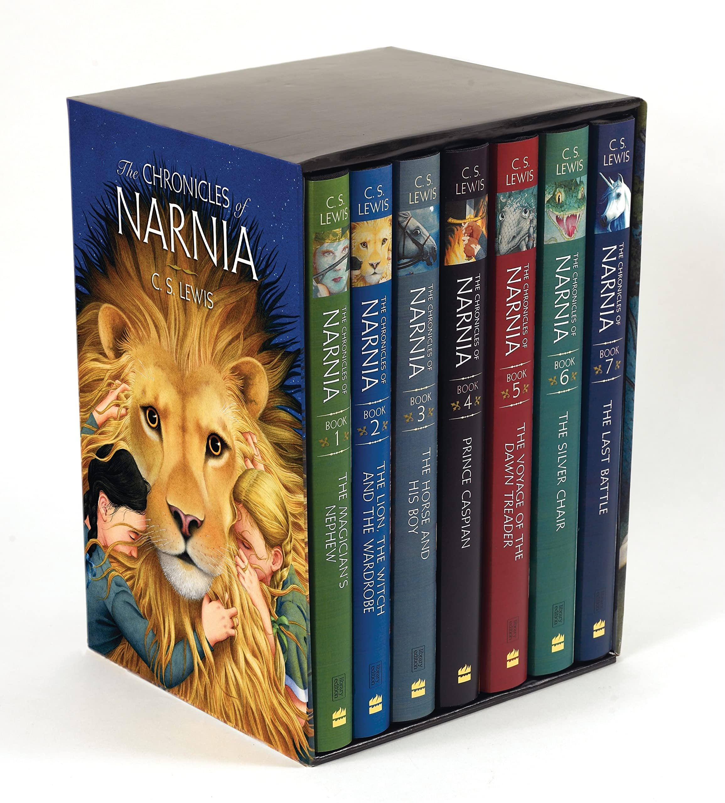

Découvrez des récits merveilleux de magie, de créatures mythiques et d'aventures épiques

Un roman fantastique gothique se déroulant dans une ville vivante enchantée, où son héroïne, Mina, ne doit pas laisser sonner les cloches... sinon !

Un cirque apparaît à l'improviste, n'ouvre que la nuit et met en scène deux charmants jeunes hommes qui s'affrontent dans un défi mystérieux... et une histoire d'amour qui s'épanouit au milieu de la magie.

La plus belle fille du monde épouse le plus beau prince de tous les temps, et il s'avère être... eh bien... bien moins que l'homme de ses rêves.

Tigana est l’histoire d’un pays détruit par un roi méchant, au point que personne ne peut même se souvenir de son nom. Des gens courageux décident de se battre pour faire revivre leur terre et rendre son nom, Tigana, au monde. C’est un livre plein de magie, de guerre et d’espoir.

Dans un endroit calme, vivent les Hobbits dans le Comté. Celui-ci est celui utilisé dans le Belbon Sacquet avec un trésor de beaux cheveux et d'autres couleurs, qui peuvent être émiettés par le Maléfique Sauron. Celui-ci a un grand pouvoir, et Sauron le ramène au placard. Certains serveurs, les Cavaliers Noirs, commencent à traquer ceux qui fonctionnent..

Harry, l'orphelin, découvre qu'il est un sorcier le jour de ses 11 ans, lorsque Hagrid l'accompagne à Poudlard, l'école de magie. Bébé, l'amour de sa mère le protège et triomphe du méchant Voldemort, le rendant célèbre sous le nom de « Le Garçon qui a survécu ». Avec ses amis Hermione et Ron, Harry doit vaincre « Celui-Dont-On-Ne-Doit-Pas-Prononcer-Le-Nom »

Geralt de Riv, un chasseur de monstres, traverse un monde brutal mêlant magie et intrigues politiques.

Des enfants découvrent un monde magique où ils deviennent rois et reines, guidés par le lion Aslan.